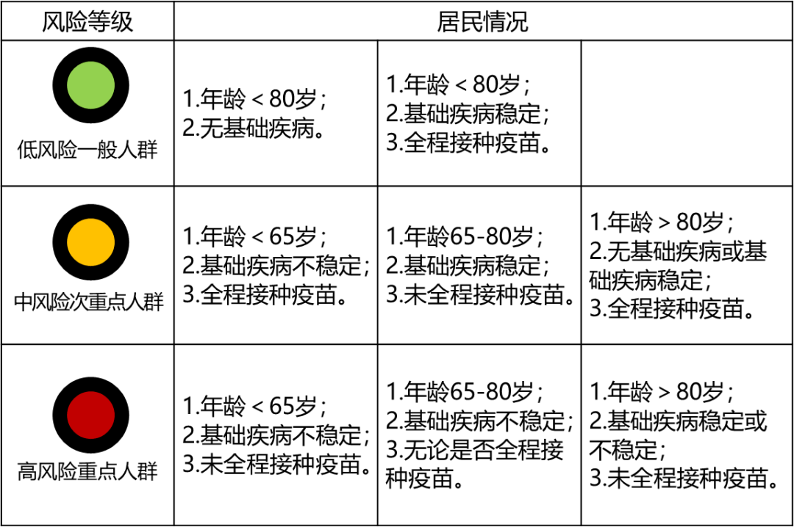
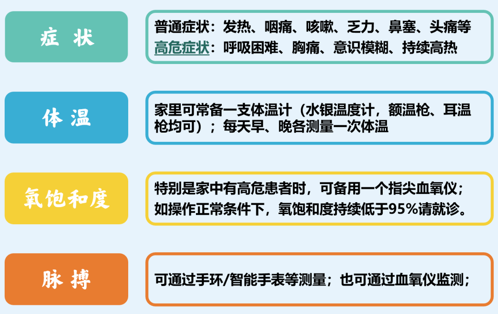
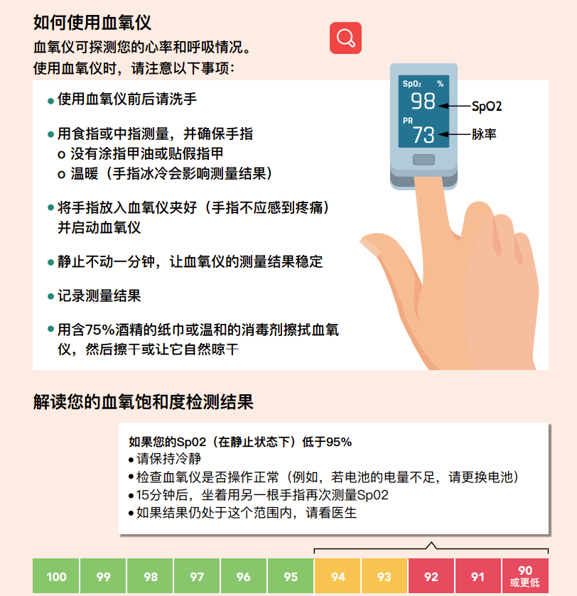

原文来自张文宏团队的公众号：华山感染
昨天抗击新冠“新十条”颁布，值得纪念。中国抗疫进入对病毒全面反攻的新时期。但是全国各地的抗疫手势，医院和民众的认知，政府的应对，均需要进一步协调，协调之际未免会有些凌乱，民众也会有些对不确定性的不安。
可以预计的是随着生活逐渐走向正常化，我们将面临一个与新冠病毒不期而遇的巨大可能。过去的三年，让我们不愿意接触新冠。犹如人类对动物的驯化，随着时间的推移，人类的世界里多了一种叫做新冠病毒的微生物，其实人类社会中有类似的微生物已经有数千种。在不经意间，每年我们都会因为感染其中的几种而短暂发病，有时你甚至一无所知，已经感染过了，但是也有人因为免疫力很低，每次生病都会很重，甚至有生命危险。但是这就是现实的世界，我们可能还需要数月时间去慢慢习惯这样的世界。
应对新冠的方案千万条，核心问题就一个，我生病了要去医院吗？围绕着这个问题，很简单，99.5% 的人可能不需要去医院，社区卫生服务中心的家庭医生，医院发热门诊的医生，通过电话、网络或者是当面问诊就能解决。但是，我们的医疗体系必须保证 0.5% 的病人应该收治在医院。我们今天要做的所有的事情就是老百姓知道得了新冠不要随意去医院，在家就能很快痊愈，不过要有医生，最好是身边的家庭医生，社区服务中心熟悉的医生，能够给予指导，互联网医院的快递小哥或者社区志愿者能够把买的药及时送到需要治疗的病人手中就可以了。而需要住院的病人，我们社区基层医生或者医院的发热门诊的医生处理后可以转到红码医院或者红码病区，得到高效的治疗。这套体系只要正常运转，又有足够的药物储备，我们通过数月时间的磨合，就能逐渐走出疫情，迎接美好灿烂的生活了。
所以无论是民众还是政府，只需要围绕一件事，就是如何让 0.5% 需要住院的人能有床位，让 99.5% 的感染者能够安心地在家治疗。但是，经常有人问：“道理我都懂，但我还是不知道怎么办？” 那么，今天这份华山感染新冠居家指南赶紧收好！
1. 新冠奥密克戎感染常见症状
新冠奥密克戎感染后，很多人都没有症状或者症状相对较轻，但也有一些人依旧会出现一些“流感样症状”，其中包括发热、咳嗽、咽痛、流鼻涕、鼻塞、肌肉酸痛、头痛等。
2. 如何判断我是否适合居家康复?
如果你是属于未合并严重基础疾病的无症状感染者或者轻型病例，并且家庭环境又具备自我隔离的条件，那么完全可以在家里进行自我隔离和健康观察，等到症状消失，根据有关规定检测核酸阴转便可以恢复日常工作和生活。但是，如果你是属于高风险人群，则需要更为慎重。
3. 如何判断我是否属于高危人群?
12 月 7 日，国家针对居民不同基础疾病和疫苗接种情况制定了风险评估标准。其中需要同时满足两个条件的人群才划为低风险人群：
- ① 年龄小于
80岁 - ② 无基础疾病，或者基础疾病稳定且全程接种疫苗

常见的较为严重的基础疾病包括肾功能不全正在透析的患者，长期使用免疫抑制剂的免疫缺陷人群和器官移植后人群，肿瘤正在接受放化疗或免疫治疗的人群等。
如果你不属于低风险人群，又同时伴有高热等症状，那么应该前往医院进接受医生进一步的评估。
4. 我需要监测哪些指标?
对于选择在家隔离和康复的感染者，在保证自己能够吃好，休息好的同时，还需要学会自己监测以下指标：症状，体温，脉搏，氧饱和度。

5. 那些需要去医院急诊?
指标超出怎样的范围需要去医院急诊或发热门诊就诊？
发热时往往会有脉搏（心率）增快，并不需要过于紧张。但如果出现持续高热（大于 39 度）或脉搏（心率）持续增快（超过 100 次/分）超过 3 天；或者氧饱和度下降至 95% 以下，则应及时前往医院就诊。 如果在发热的同时，还伴有明显的呼吸困难、或者是不能缓解的胸痛、乃至意识混乱时，需要及时前往医院就诊。
6. 基础疾病控制不佳者
没有上述的报警信号，但是基础疾病控制不佳怎么办？
有些患有慢性病（如糖尿病、高血压）的人群，虽然没有上述症状，但如果出现血糖、血压控制不佳等情况时，首先推荐使用互联网医院或者是采取在线咨询问诊等方式与专科医生取得联系，获取用药指导，如果相关资源不能获得或症状持续加重，应该及时前往医院专门针对阳性感染者的就诊场所就诊。
7. 自行服用药物来缓解?
对于发热、咽痛、咳嗽等常见症状，是否可以自行服用药物来缓解？
对于无基础疾病的年轻人，这些症状通常能通过充分休息、增强营养后在 3-5 天以内自行恢复。如上述症状明显，可通过服用药物来缓解，比如说发热可以服用退热药，咳嗽可以服用一些止咳糖浆等，但应该按照说明书的剂量服用，切勿超过合理的剂量范围。也可以在医生的指导下，选择服用一些中成药制剂帮助缓解症状。
8. 家用常备小药箱物品
家用小药箱可以准备哪些物品?
① 体温计：电子的耳温计、额温枪，或者水银温度计都可以。其中水银温度计易碎，如果破裂可能汞中毒，因此使用需要小心，不适宜生活自理能力较差的居民。
② 指夹式脉氧仪：一般的指夹式脉氧仪夹在手指上后会显示两个参数：SpO2% 就是我们所说的氧饱和度，一般在 95 以上都无需担心；PR bpm 是指脉搏，成年人正常的脉搏数值显示在 60-100，不过发热时，体温每上升 1℃ 脉率一般会升高 10-20 次/分钟，因此发热时出现心率或脉搏的增快是正常表现，但如果明显感到心慌不适、或者心律不齐（心跳或脉搏不规则），那么需要去医院就诊。

③ 电子血压计，水银血压计：相比传统的水银血压计，电子血压计使用便捷，也更安全，成年人正常的血压范围收缩压（上压）在 90-140mmHg 左右，舒张压在 60-90mmHg 左右。对于有基础疾病的患者，平时就可以监测一下自己的日常血压范围，如果严重偏离自己的基础血压水平，那么应当及时就诊。
④ 退热药、感冒药、止咳药、化痰药：需要注意，这些药品都不能治疗新冠，只是可能可以缓解一下新冠引起的症状。可以根据个人既往感冒的经验适量购买，但没有必要进行囤积。
虽然这些药品多数都是非处方药品（OTC），但不当使用也可能会出现一定的副作用，比如 NSAIDS 类药物（非甾体类抗炎药）的不良反应中比较常见的就是肝肾功能损害。因此在应用的时候建议仔细阅读说明书，特别是对于有基础病、以及孕妇、儿童等特殊人群，用药前应当咨询医生。
总之，新冠病毒演变到奥密克戎变异株后，较之前的病毒呈现出了相对较轻的致病性，感染者多呈无症状或者症状轻微，大部分感染者通过居家隔离和自我健康监测都能够在较短的时间里获得康复，而不必去医院就诊。虽然这样，但还是会有极少数人会出现重症甚至危及生命，因此，万一感染了新冠，学会如何判断自己是否需要去医院就诊就显得尤为重要。
每个人都应当成为自己健康的第一责任人！
9. 其他康复指南手册
这里列出其他国家或者国内针对本地开放之后的新冠预防手册！